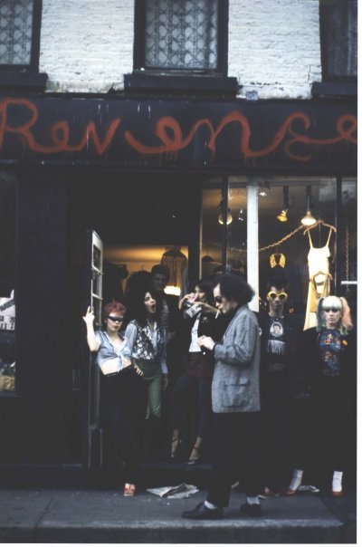

In the 1970’s New York City punk scene there was a group of girls called the Revenge Girls. They ran a shop called Revenge that basically invented the “punk look.” Debbie Revenge has donated several archival prints as perks in our campaign. Check them out here igg.me/at/GRRRLmovie